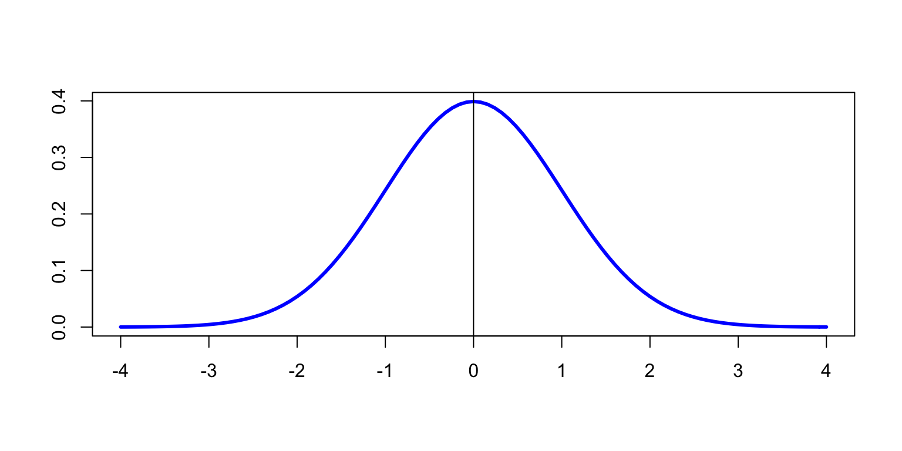

Tema 2 Contrastos de bondat d’ajust
Els contrastos d’un paràmetre del tema anterior els empràvem bàsicament per cercar evidència que a un paràmetre poblacional (una mitjana, una proporció) “li passava qualque cosa”:
Tenim evidència que la mitjana poblacional és diferent de 2?
Tenim evidència que la proporció poblacional d’èxits és més gran que el 10%?
Però també podem entendre que hi cercàvem si podem acceptar que el paràmetre poblacional de la variable que havia produït la mostra era igual a qualque cosa:
Podem acceptar que la mitjana poblacional és igual a 2?
Podem acceptar que la proporció poblacional d’èxits és del 10%?
Als contrastos de bondat d’ajust anam una passa més enllà, i ens demanam si podem acceptar que la variable poblacional té una distribució concreta, o si per contra seria molt estrany que la nostra mostra hagués estat produïda per una variable amb aquella distribució. Per exemple:
Llençam un dau en l’aire moltes vegades, apuntam els resultats, i ens demanam si podem acceptar que el dau està equilibrat (és a dir, que totes les cares tenen la mateixa probabilitat de sortir) o si per contra hi ha evidència que està trucat.
Anotam els ingressos diaris per una determinada malaltia en un hospital i ens demanam si podem acceptar que segueixen una distribució de Poisson o si per contra hi ha evidència que no és el cas, la qual cosa seria senyal que hi ha un brot estrany de la malaltia.
Volem emprar una mostra petita en un t-test. Podem acceptar que prové d’una distribució normal?
De fet, ja hem estudiat un tipus de contrast de bondat d’ajust: els contrastos bilaterals d’una proporció, on ens demanàvem si podem acceptar que la mostra prové de tal variable Bernoulli o si per contra hi ha evidència que no.
2.1 Bondat d’ajust
Considerau l’exemple següent:
Exemple 2.1 Les freqüències de les darreres xifres dels primers premis de la Grossa de la loteria de Nadal als 212 sortejos de la seva història (fins el de 2020, inclòs) han estat les següents:
\[ \begin{array}{r|cccccccccc} \hline \text{xifra} & 0 & 1 & 2 & 3 & 4 & 5 & 6 & 7 & 8 & 9 \\ \hline \text{freqüència} & 22 & 8 & 13 & 21 & 27 & 31 & 27 & 23 & 23 & 17\\ \hline \end{array} \]
Hi ha evidència que no totes les xifres tenen la mateixa probabilitat de sortir com a darrera xifra de la Grossa?
Aquesta és la típica pregunta d’un contrast de bondat d’ajust.
En principi, estam disposats a acceptar que la nostra mostra prové d’una variable amb una certa distribució:
Que totes les darreres xifres de la Grossa tenen la mateixa probabilitat d’aparèixer.
Rebutjarem aquesta hipòtesi si seria molt estrany haver obtingut la nostra mostra en el cas que la variable seguís aquesta distribució:
Si les darreres xifres tenguessin totes la mateixa probabilitat d’aparèixer, esperaríem una certa uniformitat en les seves freqüències a la nostra mostra. Si les freqüències reals se separen molt d’aquesta uniformitat, tendrem motius per dubtar que tots els dígits tenien la mateixa probabilitat d’aparèixer.
Grossa=c(22,8,13,21,27,31,27,23,23,17)
barplot(Grossa,col="light blue",names=0:9,
main="Darreres xifres de la Grossa de Nadal")
Més en general, un contrast de bondat d’ajust té la forma següent: \[ \left\{ \begin{array}{l} H_0: \text{la mostra prové de la distribució esperada}\\ H_1: \text{la mostra NO prové de la distribució esperada} \end{array} \right. \] I, com sempre,
Si obtenim evidència que ens permeti rebutjar la hipòtesi nul·la, conclourem que la mostra no prové de la distribució esperada
Si no obtenim evidència que ens permeti rebutjar la hipòtesi nul·la, donarem per bo que la mostra prové de la distribució esperada
Els tests de bondat d’ajust es basen bàsicament en:
Comparar les freqüències observades amb les freqüències esperades si la distribució fos la que contrastam
Determinar si les freqüències observades són prou diferents de les esperades com per fer inversemblant la hipòtesi nul·la
Per exemple, continuant amb el nostre exemple de la Grossa, si totes les darreres xifres tinguessin la mateixa probabilitat d’aparèixer, la seva probabilitat seria 1/10, i per tant el nombre esperat d’aparicions de cadascuna d’elles seria 212/10=21.2.
barplot(Grossa, col="light blue", names=0:9,
main="Darreres xifres de la Grossa de Nadal")
abline(h=21.2, col="red", lwd=2, lty="dashed")
Les desviacions observades respecte d’aquest valor esperat, representat per la línia vermella al gràfic anterior, són prou grans com per fer-nos dubtar que les darreres xifres de les Grosses de Nadal tenguin totes la mateixa probabilitat d’aparèixer? O, pel contrari, entren dins el que és raonable esperar per mor de l’atzar?
2.2 Test \(\chi^2\) de Pearson
2.2.1 El test bàsic
El test més popular per a variables aleatòries qualitatives, ordinals i quantitatives discretes (o contínues agrupades) és el test \(\chi^2\) de Pearson.
Suposem que tenim una mostra aleatòria simple de mida \(n\) de la variable poblacional \(X\). Agrupam tots els resultats possibles en \(k\geqslant 2\) classes, \(C_1,\ldots,C_k\) (poden ser tots els resultats individuals possibles, si només n’hi ha un conjunt finit). Així, al nostre exemple de les terminacions de la loteria, hi emprarem 10 classes, definides pels 10 valors possibles de la darrera xifra: \(C_1=\{0\}\), \(C_2=\{1\}\),…, \(C_{10}=\{9\}\).
Volem contrastar si les observacions segueixen una distribució totalment coneguda, per a la qual poguem calcular la probabilitat que una observació caigui dins cada una de les classes.
El contrast és, recordem, \[ \left\{\begin{array}{l} H_{0}: \text{La v.a. poblacional té aquesta distribució }\\ H_{1}: \text{La v.a. poblacional no té aquesta distribució} \end{array} \right. \]
Per a cada classe \(C_i\), diguem
\(obs_i\): la freqüència absoluta observada d’aquesta classe. Per exemple, en el nostre exemple de la loteria, \(obs_1\) és el nombre de vegades que la Grossa ha acabat en 0: 21; \(obs_2\) és el nombre de vegades que la Grossa ha acabat en 1: 8; etc.
\(p_i\): la probabilitat teòrica que una observació pertanyi a aquesta classe si \(H_0\) és vertadera. En el nostre exemple de la loteria, totes les probabilitats \(p_i\) valen el mateix, 1/10.
\(esp_i\): la freqüència absoluta esperada d’aquesta classe si \(H_0\) és vertadera: \(esp_i=p_i\cdot n\). En el nostre exemple de la loteria, totes aquestes freqüències esperades \(esp_i\) valen el mateix, 212/10=21.2.
Rebutjarem \(H_0\) si les \(obs_i\) són prou diferents de les \(esp_i\). Per mesurar-ho, empram el teorema següent:
Teorema 2.1 Suposem que la distribució contrastada està completament determinada i que se satisfan les condicions següents:
La mida \(n\) de la mostra és gran (ho fixarem en \(n\geqslant 30\))
Les classes cobreixen tots els resultats possibles: \(\sum\limits_{i=1}^kesp_i= n\)
Totes les classes tenen prou probabilitat teòrica com per tenir-les en compte (nosaltres emprarem la Regla de Cochran: totes les \(esp_i\geqslant 5\))
Aleshores, si \(H_0\) és vertadera, l’estadístic de contrast \[ \chi^2=\sum_{i=1}^k \frac{(obs_{i}-esp_{i})^2}{esp_{i}} \] té (aproximadament) una distribució \(\chi_{k-1}^2\).
Si la distribució contrastada no estava completament determinada i se n’han estimat \(m\) paràmetres a partir de la mostra, s’ha de prendre com a distribució de l’estadístic de contrast una \(\chi_{k-1-m}^2\).
Fixau-vos que l’estadístic de contrast \(\chi^2\) s’obté de la manera següent:
Per cada classe \(C_i\):
- Se resta \(obs_{i}-esp_{i}\)
- S’eleva el resultat al quadrat: \((obs_{i}-esp_{i})^2\)
- Es divideix el resultat per \(esp_i\): \((obs_{i}-esp_{i})^2/esp_{i}\)
Se sumen aquests valors per a totes les classes \(C_i\).
Aleshores, el contrast se fa de la manera següent:
Se calcula el valor que pren l’estadístic de contrast sobre la nostra mostra, diguem-li \(\chi_0^2\)
El p-valor del contrast és \(P(\chi^2\geqslant \chi_0^2)\), calculada tenint en compte que \(\chi^2\) té distribució \(\chi^2\) amb nombre de graus de llibertat:
Si no s’ha hagut d’estimar cap paràmetre de la distribució amb la mostra, el nombre de classes menys 1: \(\chi^2_{k-1}\)
Si s’ha estimat qualque paràmetre de la distribució amb la mostra, el nombre de classes menys 1 i menys el nombre de paràmetres estimats: \(\chi^2_{k-1-m}\) amb \(m\) el nombre de paràmetres estimats
Exemple 2.2 Tornem a l’Exemple 2.1. Recordem que la nostra mostra era
\[ \begin{array}{r|cccccccccc} \hline \text{xifra} & 0 & 1 & 2 & 3 & 4 & 5 & 6 & 7 & 8 & 9 \\ \hline \text{freqüència} & 22 & 8 & 13 & 21 & 27 & 31 & 27 & 23 & 23 & 17\\ \hline \end{array} \] Com que totes les freqüències esperades valen 21.2, el valor de l’estadístic de contrast sobre aquesta mostra és \[ \begin{array}{rl} \chi_0^2& \displaystyle=\frac{(22-21.2)^2}{21.2}+\frac{(8-21.2)^2}{21.2}+\cdots\\[2ex] & \qquad\quad\displaystyle +\frac{(23-21.2)^2}{21.2} +\frac{(17-21.2)^2}{21.2}=20.264 \end{array} \]
Calculat amb R:
X2=sum((Grossa-21.2)^2/21.2)
X2## [1] 20.26415En resum, per resoldre la qüestió plantejada en l’Exemple 2.1 procedim de la manera següent:
Variable aleatòria d’interès, \(X\): Faig un sorteig de la Grossa de Nadal i anot la darrera xifra del nombre guanyador.
Contrast: \[ \left\{\begin{array}{l} H_{0}: \text{$X$ és uniforme}\\ H_{1}: \text{$X$ no és uniforme} \end{array} \right. \] (Recordau que una variable aleatòria discreta és uniforme quan tots els elements del seu domini tenen la mateixa probabilitat.)
Estadístic de contrast: \[ \chi^2=\sum_{i=1}^k \frac{(obs_{i}-esp_{i})^2}{esp_{i}} \]
Estam en les condicions del Teorema 2.1:
\(n=212\), gran
Les classes, que corresponen als dígits 0,…,9, cobreixen tots els resultats possibles; \(k=10\)
Cada \(esp_i=21.2\geqslant 5\)
Per tant, com que no estimam cap paràmetre de la distribució, aquest estadístic de contrast segueix una llei \(\chi^2_9\).
Valor de l’estadístic de contrast: Ja l’hem calculat, 20.264.
p-valor: \(P(\chi_9^2\geqslant 20.264)=\texttt{1-pchisq(20.264,9)}= 0.0164\)
Conclusió: Hem obtingut evidència estadísticament significativa que les darreres xifres de la Grossa no apareixen de manera equiprobable (test \(\chi^2\) de Pearson, p-valor 0.0164).
Exemple 2.3 Anem a confirmar amb una simulació aquest p-valor. El que farem serà el següent: Repetirem 10000 vegades, amb un replicate, el procés de generar a l’atzar i de manera equiprobable 212 dígits, calcular la taula de freqüències de cada una d’aquestes mostres i calcular l’estadístic de contrast \(\chi^2\) sobre cada una d’aquestes taules. Finalment, calcularem la fracció de vegades que \(\chi^2\) ha valgut més que a la nostra mostra.
set.seed(42)
X2sim=replicate(10000,sum((table(sample(0:9,212,rep=TRUE))-21.2)^2/21.2))
length(which(X2sim>=X2))/10000## [1] 0.0145Només un 1.45% de les 10000 simulacions han donat un valor de \(\chi^2\) més gran o igual que el de la mostra de Grosses de Nadal. Per tant, el valor de la \(\chi^2\) de la mostra de Grosses de Nadal és anormalment gran si les darreres xifres tenen totes la mateixa probabilitat d’aparèixer. Naturalment, anormal no vol dir impossible. Sense anar més enfora, algunes de les mostres de la nostra simulació han donat un valor més gran, i alguna fins i tot ha arribat a:
max(X2sim)## [1] 34.98113Però tenim evidència estadística per dubtar que les darreres xifres de la Grossa surtin equiprobablement. Naturalment, podria ser un error de tipus I.
La nota següent us pot ser útil si qualque dia heu de decidir a ull si el valor de l’estadístic d’un test \(\chi^2\) és molt gran.
Figura 2.1: Algunes probabilitats per a una distribució khi quadrat
La funció per realitzar un test \(\chi^2\) amb R és
chisq.test(obs, p=...)on obs és el vector de les freqüències observades de les classes, \((obs_i)_i\) i p s’ha d’igualar al vector de les probabilitats teòriques de les classes, \((p_i)_i\).
p, R entén que totes les probabilitats són iguals.
p ha de ser igual a 1. Recordau que les classes han de cobrir tots els casos possibles.
Al nostre exemple de la Grossa de Nadal, entraríem simplement
chisq.test(Grossa)##
## Chi-squared test for given probabilities
##
## data: Grossa
## X-squared = 20.264, df = 9, p-value = 0.01635Obtenim el valor de \(\chi^2\), X-squared, els graus de llibertat, df, i el p-valor, p-value.
Exemple 2.4 Un tècnic de medi ambient vol estudiar l’augment de temperatura de l’aigua a dos quilòmetres dels abocaments d’aigua autoritzats d’una planta industrial.
El responsable de l’empresa afirma que
aquests augments de temperatura segueixen una llei normal amb \(\mu=3.5\) dècimes de grau C i \(\sigma=0.7\) dècimes de grau C.
El tècnic ho posa en dubte. Per decidir-ho, pren una mostra aleatòria d’observacions de l’augment de les temperatures (en dècimes de grau). Les dades són les de la taula següent, ja agrupades en classes:
\[ \begin{array}{c|c} \text{Rang d'augments} & \text{Freqüències}\\ \hline 1.45\text{ a }1.95 & 2 \\ 1.95\text{ a }2.45 & 1 \\ 2.45\text{ a }2.95 & 4 \\ 2.95\text{ a }3.45 & 15 \\ 3.45\text{ a }3.95 & 10 \\ 3.95\text{ a }4.45 & 5 \\ 4.45\text{ a }4.95 & 3 \\ \hline \text{Total} & 40\\ \end{array} \]
Hi ha evidència que la sospita del tècnic sigui vertadera, amb un nivell de significació del 5%?
Variable aleatòria d’interès, \(X\): Prenc un lloc a 2 km dels abocaments d’aigua autoritzats d’una planta industrial i hi mesur l’augment de temperatura (en dècimes de grau).
Contrast: \[ \left\{ \begin{array}{l} H_{0}:\text{$X$ és $N(3.5,0.7)$}\\ H_{1}: \text{$X$ no és $N(3.5,0.7)$} \end{array} \right. \]
Estadístic de contrast: Volem emprar el test \(\chi^2\), així que l’estadístic de contrast serà \[ \chi^2=\sum_{i=1}^k \frac{(obs_{i}-esp_{i})^2}{esp_{i}} \]
Cal comprovar que se satisfan les condicions del Teorema 2.1.
La mida de la mostra és \(n=40\), suficient.
Les classes, cobreixen tots els resultats possibles?
No, perquè els possible valors d’una variable normal són tots els nombres reals, i les nostres classes només cobreixen l’interval [1.45,4.95]. El que farem serà afegir les cues a les dues classes dels extrems, i considerar les classes \[ \begin{array}{l|c} \text{Rang d'augments} & \text{Freqüències}\\ \hline \text{menys de 1.95} & 2 \\ 1.95 \text{ a } 2.45 & 1 \\ 2.45\text{ a }2.95 & 4 \\ 2.95\text{ a }3.45 & 15 \\ 3.45\text{ a }3.95 & 10 \\ 3.95\text{ a }4.45 & 5 \\ \text{més de 4.45} & 3 \\ \hline \text{Total} & 40\\ \end{array} \] Ara ja cobreixen tots els resultats possibles.
- Totes les freqüències esperades són com a mínim 5?
Doncs no ho sabem, les haurem de calcular. Recordem que són les freqüències esperades de cada classe suposant que la variable poblacional és \(N(3.5,0.7)\), i s’obtenen multiplicant la probabilitat de cada interval (amb aquesta distribució) per la mida de la mostra, 40.
La probabilitat de la 1a classe és \[ p_1 =P(X\leqslant 1.95)=\texttt{pnorm(1.95,3.5,0.7)}=0.0134 \] i la seva freqüència esperada és \[ esp_1=p_1\cdot n= 0.0134\cdot 40=0.536 \]
La probabilitat de la 2a classe és \[ \begin{array}{rl} p_2 & =P(1.95\leqslant X\leqslant 2.45)\\ & =\texttt{pnorm(2.45,3.5,0.7)-pnorm(1.95,3.5,0.7)}=0.0534 \end{array} \] i per tant la seva freqüència esperada és \[ esp_2=p_2\cdot n= 0.0534\cdot 40= 2.136 \]
Calcularem amb R totes les freqüències esperades d’aquesta manera i d’un sol cop:
freq.obs=c(2,1,4,15,10,5,3)
n=sum(freq.obs)
lims=c(-Inf,1.95,2.45,2.95,3.45,3.95,4.45,Inf)
lim.esq=lims[-length(lims)] #Els límits inferiors de les classes
lim.dret=lims[-1] #Els límits superiors de les classes
mu=3.5
sigma=0.7
prob.esp=pnorm(lim.dret,mu,sigma)-pnorm(lim.esq,mu,sigma)
freq.esp=n*prob.esp
round(freq.esp,3)## [1] 0.536 2.136 5.968 10.220 10.733 6.912 3.495Per tant, tenim la taula \[ \begin{array}{r|c|c} \text{Rang de temperatures} & obs_i & esp_i\\ \hline \text{menys de 1.95} & 2 & 0.536 \\ 1.95\text{ a }2.45 & 1 & 2.136 \\ 2.45\text{ a }2.95 & 4 & 5.968 \\ 2.95\text{ a }3.45 & 15 & 10.220 \\ 3.45\text{ a }3.95 & 10 & 10.733 \\ 3.95\text{ a }4.45 & 5 & 6.912 \\ \text{més de 4.45} & 3 & 3.495 \end{array} \] Tenim freqüències esperades per davall de 5, per tant no podem aplicar el test \(\chi^2\) tal qual. El que farem serà agrupar classes contigües a fi d’obtenir freqüències esperades més grans o iguals que 5 amb el màxim de classes. En concret, haurem d’agrupar per un costat les tres primeres classes, i per un altre costat les dues darreres classes \[ \begin{array}{r|c|c} \text{Rang de temperatures} & obs_i & esp_i\\\hline \text{menys de 2.95} & 7 & 8.64\\ 2.95\text{ a }3.45 & 15 & 10.22 \\ 3.45\text{ a }3.95 & 10 & 10.733 \\ \text{més de 3.95} & 8& 10.407 \end{array} \]
Ara ja podem aplicar el text \(\chi^2\) amb aquestes \(k=4\) classes. Com que no hem estimat cap paràmetre, prendrem com a distribució de l’estadístic de contrast una \(\chi^2_3\).
Valor de l’estadístic de contrast: \[ \begin{array}{rl} \chi_0^2 &\displaystyle=\frac{(7-8.64)^2}{8.64}+\frac{(15-10.22)^2}{10.22}\\ &\displaystyle\qquad\quad +\frac{(10-10.733)^2}{10.733}+\frac{(8-10.407)^2}{10.407}=3.154 \end{array} \]
p-valor: \[ P(\chi_{3}^2\geqslant 3.154)=\texttt{1-pchisq(3.154,3)}=0.37 \]
Conclusió: Podem acceptar que els augments de temperatures observats segueixen una llei normal \(N(3.5,0.7)\) (test \(\chi^2\) de Pearson, p-valor=0.37).
Amb R, si aplicam directament la funció chisq-test als vectors de freqüències i probabilitats de les classes originals (bé, de les esteses per cobrir tot \(\mathbb{R}\)) R ens avisa que el resultat no és de fiar:
chisq.test(freq.obs,p=prob.esp)## Warning in chisq.test(freq.obs, p = prob.esp): Chi-squared approximation may be
## incorrect##
## Chi-squared test for given probabilities
##
## data: freq.obs
## X-squared = 8.1337, df = 6, p-value = 0.2285Haurem d’agrupar primer a mà les classes, abans d’aplicar chisq.test:
freq.obs.agrup=c(sum(freq.obs[1:3]),
freq.obs[4:5], sum(freq.obs[6:7]))
prob.esp.agrup=c(sum(prob.esp[1:3]),
prob.esp[4:5], sum(prob.esp[6:7]))
chisq.test(freq.obs.agrup, p=prob.esp.agrup)##
## Chi-squared test for given probabilities
##
## data: freq.obs.agrup
## X-squared = 3.1531, df = 3, p-value = 0.36862.2.2 Mètode de Montecarlo
Quan volem realitzar un test \(\chi^2\) i no es compleixen les condicions perquè el p-valor tengui sentit, es pot emprar el mètode de Montecarlo (o basat en simulacions) per estimar el p-valor:
Es genera un conjunt molt gran de mostres aleatòries amb la distribució esperada i de la mateixa mida que la nostra mostra
Es calcula l’estadístic de contrast \(\chi^2\) sobre cada mostra
S’estima el p-valor mitjançant la fracció de mostres que han donat un \(\chi^2\) més gran que el de la nostra mostra
Recordau que ja hem emprat aquest mètode a l’Exemple 2.3 per “comprovar” el p-valor obtingut a l’Exemple 2.2 amb el test \(\chi^2\) “exacte”. Però no cal complicar-se tant la vida per realitzar-lo.
La funció chisq.test també permet usar el mètode de Montecarlo, entrant-hi el paràmetre simulate.p.value=TRUE i, si es vol, igualant el paràmetre B al nombre de simulacions desitjat (per defecte, en farà 2000). Naturalment, com que es basa en una simulació aleatòria, pot ser que en cada execució doni un p-valor diferent.
Per exemple, podíem emprar el mètode de Montecarlo per realitzar el contrast de l’Exemple 2.4 amb les classes originals esteses, sense agrupar-les.
set.seed(42)
chisq.test(freq.obs, p=prob.esp, simulate.p.value=TRUE, B=5000)##
## Chi-squared test for given probabilities with simulated p-value (based
## on 5000 replicates)
##
## data: freq.obs
## X-squared = 8.1337, df = NA, p-value = 0.2206Conclusió: Podem acceptar que els augments de temperatures observats segueixen una llei normal \(N(3.5,0.7)\) (test \(\chi^2\) de Montecarlo, p-valor=0.22).
Arribam, doncs, a la mateixa conclusió que amb el test \(\chi^2\) aplicat a les dades agrupades.
2.2.3 Test \(\chi^2\) amb paràmetres poblacionals desconeguts
De vegades ens interessarà contrastar si les observacions segueixen algun tipus determinat de distribució (Poisson, normal…) amb algun paràmetre indeterminat. En aquest cas, primer estimam els paràmetres desconeguts a partir de les observacions i a continuació contrastam l’ajustament de la mostra a la distribució amb aquests paràmetres. El test és exactament el mateix que el de les seccions anteriors, excepte que ara cal restar al nombre \(k-1\) de graus de llibertat de la \(\chi^2\) el nombre \(m\) de paràmetres que hem estimat.
Exemple 2.5 Volem determinar si el nombre de vegades que apareix la seqüència GATACA en una cadena d’ADN humà de longitud 1000 segueix una llei de Poisson.
Per fer-ho, prenem 576 mostres de cadenes d’ADN humà de longitud 1000 i hi comptam els nombres de GATACA. Els resultats són els de la taula següent: \[ \begin{array}{r|rrrrrr} \hline \text{nombre $x_i$ de vegades} & 0 & 1 & 2 & 3 & 4 & 5 \\[-1ex] \text{que hi apareix GATACA} & & & & & & \\ \hline \text{freqüència $obs_{i}$} & 229 & 211 & 93 & 35 & 7 & 1 \\ \hline \end{array} \]
Variable aleatòria d’interès, \(X\): Prenc una cadena d’ADN humà de 1000 bases i hi compt el nombre de seqüències GATACA.
Contrast: \[ \left\{ \begin{array}{ll} H_0: \text{$X$ és de Poisson}\\ H_1: \text{$X$ no és de Poisson} \end{array} \right. \]
Per poder calcular les probabilitats de les classes, necessitam estimar el paràmetre \(\lambda\) de la variable de Poisson. El seu estimador màxim versemblant és la mitjana mostral: \[ \lambda =\dfrac{229 + 211 + 93 + 35 +7 + 1 }{576}=\dfrac{576}{576}=1 \]
Ara sí: \[ \begin{array}{rl} \lambda & =\dfrac{229\cdot 0+ 211\cdot 1+ 93\cdot 2+ 35\cdot 3+7\cdot 4+ 1\cdot 5}{576}\\ & =\dfrac{535}{576}=0.929 \end{array} \]
Estadístic de contrast: Volem emprar el test \(\chi^2\), així que l’estadístic de contrast serà \[ \chi^2=\sum_{i=1}^k \frac{(obs_{i}-esp_{i})^2}{esp_{i}} \]
Cal comprovar que se satisfan les condicions del Teorema 2.1.
La mida de la mostra és \(n=576\), ben gran.
Per veure si les freqüències esperades són totes més grans o iguals que 5, les hem de calcular.
Recordem que, si \(X\) és una variable aleatòria de Poisson \(Po(\lambda)\), \[ P(X=k)=e^{-\lambda}\cdot \frac{\lambda^k}{k!}=\texttt{dpois(k,lambda)} \]
Les probabilitats \(p_i\) d’obtenir \(i=0,1,2,3,4,5\) són
round(dpois(0:5,0.929),3)## [1] 0.395 0.367 0.170 0.053 0.012 0.002i les freqüències esperades \(esp_i=p_i\cdot n\) d’aquests valors són
round(dpois(0:5,0.929)*576,2)## [1] 227.49 211.34 98.17 30.40 7.06 1.31Obtenim la taula \[ \begin{array}{l|rrrrrr} \hline x_i & 0 & 1 & 2 & 3 & 4 & 5 \\ \hline obs_{i} & 229 & 211 & 93 & 35 & 7 & 1 \\ \hline p_i &0.395 & 0.367 &0.170 & 0.053 & 0.012 & 0.002 \\ \hline esp_i & 227.49 & 211.34 & 98.17 & 30.40 & 7.06 & 1.31\\ \hline \end{array} \]
Per cobrir tots els resultats possibles, cal canviar el 5 per “5 o més” i recalcular la probabilitat i la freqüència esperada d’aquesta classe: la seva probabilitat és \(P(X\geqslant 5)=1-P(X\leqslant 4)\)
round(1-ppois(4,0.929),3)## [1] 0.003i la seva freqüència esperada és
round((1-ppois(4,0.929))*576,2)## [1] 1.55Obtenim la taula \[ \begin{array}{l|rrrrrr} \hline x_i & 0 & 1 & 2 & 3 & 4 & \geqslant 5 \\ \hline obs_{i}& 229 & 211 & 93 & 35 & 7 & 1 \\ \hline p_i &0.395 & 0.367 &0.170 & 0.053 & 0.012 & 0.003 \\ \hline esp_i & 227.49 & 211.34 & 98.17 & 30.40 & 7.06 & 1.55\\ \hline \end{array} \]
Perquè totes les classes tenguin freqüència esperada més gran o igual que 5, agruparem les dues darreres classes
\[ \begin{array}{l|rrrrr} \hline x_i & 0 & 1 & 2 & 3 & \geqslant 4 \\ \hline obs_{i}& 229 & 211 & 93 & 35 & 8 \\ \hline p_i &0.395 & 0.367 &0.170 & 0.053 & 0.015 \\ \hline esp_i & 227.49 & 211.34 & 98.17 & 30.40 & 8.61\\ \hline \end{array} \]
Ara totes les freqüències esperades són prou grans i les classes cobreixen tots els valors possibles de la variable. L’estadístic de contrast té distribució \(\chi_{k-1}^2\) amb \(k=5\), per tant \(\chi_{4}^2\).
Perdó. L’estadístic de contrast té distribució \(\chi_{3}^2\). Podem continuar.
Valor de l’estadístic de contrast:
obs.gataca=c(229,211,93,35,8)
n=sum(obs.gataca)
probs.gataca=c(dpois(0:3,0.929),1-ppois(3,0.929))
esp.gataca=probs.gataca*n
X02=sum((obs.gataca-esp.gataca)^2/esp.gataca)
round(X02,2)## [1] 1.02p-valor: \(P(\chi_3^2\geqslant 1.02)=\texttt{1-pchisq(1.02,3)}=0.796\)
Conclusió: Podem acceptar que les observacions trobades segueixen una llei de Poisson (test \(\chi^2\) de Pearson, p-valor 0.796).
Amb R simplement ens estalviam el càlcul explícit de \(\chi_0^2\) i del p-valor, perquè tota la saragata de calcular freqüències esperades i agrupar a fi que se satisfaci la llei de Cochran no ens la podem estalviar.
chisq.test(obs.gataca,p=probs.gataca)##
## Chi-squared test for given probabilities
##
## data: obs.gataca
## X-squared = 1.0215, df = 4, p-value = 0.9065Conclusió: No podem rebutjar que les observacions trobades segueixin una llei de Poisson (test \(\chi^2\) de Pearson, p-valor 0.9065????).
df=4, perquè no sap que hem estimat un paràmetre
R ha calculat el p-valor prenent \(\chi_4^2\), nosaltres l’hem de calcular amb \(\chi_3^2\):
1-pchisq(1.0215,3)## [1] 0.7960498Ara ja tenim el mateix p-valor que abans.
2.3 Test de Kolmogorov-Smirnov
El test de Kolgomorov-Smirnov (test K-S, per abreviar) és el test més popular per contrastar si una mostra segueix o no una distribució contínua completament determinada, sense restriccions sobre la mida de la mostra. Es pot emprar amb tota distribució contínua sempre que estigui completament especificada.
Tot seguit explicam com funciona aquest test.
Partim d’una mostra \(x_1,x_2,\ldots,x_n\) amb tots els valors diferents i volem contrastar si ha estat produïda per una variable \(X\) contínua amb funció de distribució \(F_X\).
Per exemple, suposem que volem contrastar si podem acceptar que els valors del vector següent provenen d’una distribució normal \(N(3,1.5)\).
valors=c(5.84,4.57,1.34,3.58,1.54,2.25)Sigui \(X\) la variable aleatòria que ha produït aquest conjunt de números. Aleshores, el contrast és \[ \left\{ \begin{array}{l} H_0: \text{$X$ és $N(3,1.5)$}\\ H_0: \text{$X$ no és $N(3,1.5)$} \end{array} \right. \]
- Ordenam la mostra: \(x_{(1)}< x_{(2)}<\cdots< x_{(n)}\).
valors=sort(valors)
valors## [1] 1.34 1.54 2.25 3.58 4.57 5.84Consideram la funció de distribució mostral \(F_{n}\) d’aquesta mostra: la funció de distribució d’una variable \(n\) amb domini tot \(\mathbb{R}\) per a la qual cada \(x_{(i)}\) tingués probabilitat \(1/n\) i la resta de reals tingués probabilitat 0: \[ F_n(x)=\left\{\begin{array}{ll} 0 &\text{ si } x< x_{(1)} \\ \dfrac{k}{n}&\text{ si } x_{(k)}\leqslant x < x_{(k+1)}\\ 1 & \text{ si } x_{(n)} \leqslant x \end{array} \right. \]
A la nostra mostra ja ordenada, seria \[ F_6(x)=\left\{\begin{array}{ll} 0 &\text{ si } x< 1.34 \\ 1/6 &\text{ si } 1.34\leqslant x <1.54\\ 2/6 &\text{ si } 1.54\leqslant x <2.25\\ 3/6 &\text{ si } 2.25\leqslant x <3.58\\ 4/6 &\text{ si } 3.58\leqslant x <4.57\\ 5/6 &\text{ si } 4.57\leqslant x <5.84\\ 1 &\text{ si } 5.84\leqslant x \end{array} \right. \] El gràfic d’aquesta distribució és el següent:
plot(c(1,valors,7), c(0,(0:5)/5,1), type="s", lwd=1.5,
xlab="", ylab="")
- Comparam la funció \(F_n(x)\) amb la funció de distribució \(F_X(x)\) que tendria la variable aleatòria \(X\) si satisfés la hipòtesi nul·la. Si són molt diferents, rebutjarem que la variable \(X\) que ha produït la mostra tengui funció de distribució \(F_X\).
plot(c(1,valors,6),c(0,(0:5)/5,1),type="s", xlab="",ylab="",lwd=1.5)
curve(pnorm(x,3,1.5),col="red",lwd=1.5,add=TRUE)
legend("topleft",col=c("black","red"),lty=c(1,1),
legend=c(expression(F[6]),"N(3,1.5)"),cex=0.7)
Per comparar \(F_n(x)\) amb \(F_X(x)\), calcularem \[ \max\{|F_n(x)-F_X(x)|\mid x\in \mathbb{R}\} \] Com que \(F_X\) és creixent, aquest màxim s’assoleix a qualque escaló. Per tant, per calcular aquest màxim primer calculam, per a cada \(x_{(i)}\), la seva discrepància: la distància entre \(F_X(x_{(i)})\) i els extrems de l’escaló corresponent, \[ D_n(x_{(i)})=\max\Big\{\Big| F_X(x_{(i)})-\frac{i-1}{n}\Big|, \Big|F_{X}(x_{(i)})-\frac{i}{n}\Big|\Big\} \] i prenem la discrepància màxima, és a dir, el màxim d’aquestes discrepàncies: \[ D_n=\max\big\{D_n(x_{(i)})\mid i=1,\ldots, n\big\} \]
Al nostre exemple, els valors \(F_X(x_{(i)})\) són:
round(pnorm(valors,3,1.5),3)## [1] 0.134 0.165 0.309 0.650 0.852 0.971i per tant les discrepàncies són \[ \begin{array}{rl} D_6(x_{(1)}) & =\max\{| F_X(1.34)-0|, |F_X(1.34)-1/6|\}\\ & =\max\{|0.134-0|, |0.134-1/6|\}\\ & =\max\{ 0.134, 0.033\}=0.134\\[2ex] D_6(x_{(2)}) & =\max\{| F_X(1.54)-1/6|, |F_X(1.54)-2/6|\}\\ & =\max\{| 0.165-1/6|, |0.165-2/6|\}\\ & =\max\{ 0.002, 0.168\}=0.168\\[2ex] D_6(x_{(3)}) & =\max\{| F_X(2.25)-2/6|, |F_X(2.25)-3/6|\}\\ & =\max\{|0.309-2/6|, |0.309-3/6|\}\\ & =\max\{ 0.024, 0.191\}=0.191\\[2ex] D_6(x_{(4)}) & =\max\{| F_X(3.58)-3/6|, |F_X(3.58)-4/6|\}\\ & =\max\{| 0.65-3/6|, |0.65-4/6|\}\\ & =\max\{ 0.15, 0.017\}=0.15\\[2ex] D_6(x_{(5)}) & =\max\{| F_X(4.57)-4/6|, |F_X(4.57)-5/6|\}\\ & =\max\{|0.852-4/6|, |0.852-5/6|\}\\ & =\max\{ 0.185, 0.019\}=0.185\\[2ex] D_6(x_{(6)}) & =\max\{| F_X(5.84)-5/6|, |F_X(5.84)-6/6|\}\\ & =\max\{| 0.971-5/6|, |0.971-1|\}\\ & =\max\{ 0.138, 0.029\}=0.138 \end{array} \] i la discrepància màxima és \[ D_6=\max\{0.134,0.168,0.191,0.15,0.185,0.138\}=0.191 \]
Aquesta discrepància màxima segueix una distribució coneguda (que no depèn de la \(X\) mentre sigui contínua) que permet calcular el p-valor com la probabilitat que \(D_n\) prengui un valor més gran o igual que l’obtingut sobre la nostra mostra. Al nostre exemple, seria \(P(D_6\geqslant 0.191)\).
La corresponent funció de distribució acumulada és donada per la funció
pkolmdel paquet kolmim. Per tant, el p-valor és
library(kolmim)
round(1-pkolm(0.191,6),3)## [1] 0.951Conclusió: Podem acceptar que la mostra prové d’una variable aleatòria normal amb \(\mu=3\) i \(\sigma=1.5\) (test de Kolmogorov-Smirnov, p-valor 0.95)
Per realitzar un test K-S amb R, disposam de la instrucció
ks.test(x,"pdistribució",paràmetres)on x és el vector que conté la mostra, la pdistribució és la funció de distribució que contrastam, i els paràmetres són els de la distribució tal i com els entraríem a la funció pdistribució. Al nostre exemple, simplement entraríem
valors=c(5.84,4.57,1.34,3.58,1.54,2.25)
ks.test(valors,"pnorm",3,1.5)##
## One-sample Kolmogorov-Smirnov test
##
## data: valors
## D = 0.19146, p-value = 0.95
## alternative hypothesis: two-sidedDóna el valor de l’estadístic (la D) i el p-valor
2.4 Test de Kolmogorov-Smirnov-Lilliefors
Quan es vol emprar el test K-S per contrastar si una mostra prové de qualque distribució normal, i no d’una concreta, l’opció més popular és:
Estimar els paràmetres de la normal a partir de la mostra
Calcular l’estadístic del test K-S amb aquests paràmetres
Emprar la distribució del test K-S-Lilliefors per calcular el p-valor
Amb R, aquest test està implementat en la funció lillie.test del paquet nortest.
Per exemple, si ens haguéssim demanat d’entrada si la nostra mostra prové de qualque variable normal, haguéssim entrat
library(nortest)
lillie.test(valors)##
## Lilliefors (Kolmogorov-Smirnov) normality test
##
## data: valors
## D = 0.19912, p-value = 0.6425Exemple 2.6 Podem acceptar que les variables \(X_d\) i \(X_h\) de l’Exemple 1.4 són normals?
Apliquem el test K-S-Lilliefors a les dues mostres:
lillie.test(X_d)##
## Lilliefors (Kolmogorov-Smirnov) normality test
##
## data: X_d
## D = 0.08289, p-value = 0.04842lillie.test(X_h)##
## Lilliefors (Kolmogorov-Smirnov) normality test
##
## data: X_h
## D = 0.055977, p-value = 0.5128Podem acceptar que les temperatures dels homes tenen distribució normal, però essent rigorosos, amb nivell de significació 0.05 no podem acceptar que \(X_d\) sigui normal.
2.5 Test de la lliçó 7
(1) Quina o quines de les afirmacions següents són vertaderes sobre un test \(\chi^2\) de bondat d’ajust?
- Si la mostra és de mida com a mínim 30, segur que podem aplicar-lo
- Si la mida de la mostra és menor que 30, no podem aplicar-lo
- Si la mostra és de mida com a mínim 30, i empram 4 classes, segur que podem aplicar-lo
- Si alguna freqüència observada és més petita que 5, no podem aplicar-lo
- Si alguna freqüència esperada és més petita que 5, no podem aplicar-lo
- Cap de les altres afirmacions és vertadera
(2) Quina o quines de les afirmacions següents són vertaderes sobre un test \(\chi^2\) de bondat d’ajust?
- Si totes les freqüències observades són més grans o iguals que 5, segur que podem aplicar-lo
- Si totes les freqüències esperades són més grans o iguals que 5, segur que podem aplicar-lo
- Si totes les freqüències observades són més grans o iguals que 5, i empram 10 classes, segur que podem aplicar-lo
- Si totes les freqüències esperades són més grans o iguals que 5, i empram 10 classes, segur que podem aplicar-lo
- Cap de les altres afirmacions és vertadera
(3) En un contrast de bondat d’ajust, volem contrastar a partir d’una sèrie de llançaments d’un dau si aquest dau està equilibrat o trucat. Quina de les afirmacions següents és correcta?
- La hipòtesi nul·la és que el dau està equilibrat
- La hipòtesi nul·la és que el dau podria estar equilibrat
- La hipòtesi nul·la és que el dau podria estar trucat
- La hipòtesi nul·la és que el dau està trucat
- Cap de les altres respostes és correcta
(4) En un contrast de bondat d’ajust on volem emprar un test \(\chi^2\) per contrastar a partir d’una sèrie de llançaments d’un dau de 10 cares si aquest dau està equilibrat o trucat, quina o quines de les afirmacions següents són correctes?
- Si a la nostra mostra no hi obtenim cap 4, no cal considerar aquest valor a l’hora de fer el test \(\chi^2\)
- Si a la nostra mostra no hi obtenim cap 4, no podem aplicar un test \(\chi^2\)
- Si la nostra mostra és de 40 llançaments segur que podem aplicar un test \(\chi^2\)
- Si la nostra mostra és de 40 llançaments segur que no podem aplicar un test \(\chi^2\)
- Si la nostra mostra és de 40 llançaments, pot ser que poguem aplicar un test \(\chi^2\) i pot ser que no el poguem aplicar
- Si la nostra mostra és de 50 llançaments segur que no podem aplicar un test \(\chi^2\)
- Si la nostra mostra és de 50 llançaments, pot ser que poguem aplicar un test \(\chi^2\) i pot ser que no el poguem aplicar
- Si la nostra mostra és de 50 llançaments, segur que podem aplicar un test \(\chi^2\)
- Cap de les altres afirmacions és correcta
(5) Tenim una variable aleatòria \(X\) que pot prendre els valors 1, 2, 3 o 4. En prenem una mostra, i a partir d’aquesta mostra volem contrastar si la densitat d’aquesta variable és \(P(X=1)=P(X=2)=0.2\), \(P(X=3)=P(X=4)=0.3\). Quina o quines de les afirmacions següents són correctes?
- La hipòtesi nul·la és que X pren els valors 1,2,3,4 de manera equiprobable
- La hipòtesi nul·la és que X pren els valors 1,2,3,4 amb probabilitats \(P(X=1)=P(X=2)=0.2\), \(P(X=3)=P(X=4)=0.3\)
- La hipòtesi alternativa és que X pren els valors 1,2,3,4 amb probabilitats \(P(X=1)=P(X=2)=0.2\), \(P(X=3)=P(X=4)=0.3\)
- La hipòtesi alternativa és que X pren els valors 1,2,3,4 de manera equiprobable
- La hipòtesi alternativa és que X no pren els valors 1,2,3,4 de manera equiprobable
- Cap de les altres respostes és correcta
(6) Volem contrastar si una mostra de 35 valors s’ajusta a una certa distribució usant un test \(\chi^2\). Quina de les afirmacions següents és vertadera?
- Pot ser que puguem emprar 5 classes, però segur que no en podrem emprar 6
- Pot ser que puguem emprar 6 classes, però segur que no en podrem emprar 7
- Pot ser que puguem emprar 7 classes, però segur que no en podrem emprar 8
- Pot ser que puguem emprar 8 classes, però segur que no en podrem emprar 9
- Pot ser que puguem emprar 9 classes, però segur que no en podrem emprar 10
- Cap de les altres afirmacions és vertadera
(7) Volem contrastar si una mostra de nombres de malalts prové d’una variable aleatòria amb alguna distribució de Poisson usant un test \(\chi^2\). Quina o quines de les afirmacions següents són correctes?
- Podem prendre com a classes tots els valors possibles de la variable
- Si la mostra és de 30 o més individus, segur que podem fer servir el test \(\chi^2\), independentment de les classes que prenguem
- Si la freqüència esperada de cada classe que prenguem és com a mínim 5, segur que podem fer servir el test \(\chi^2\)
- Si la mostra és de 30 o més individus i empram classes que tenguin freqüències observades com a mínim 5, segur que podem fer servir el test \(\chi^2\)
- Alguna classe haurà de contenir un nombre infinit de valors possibles
- No fa falta estimar la lambda per emprar un test \(\chi^2\)
- Totes les altres afirmacions són falses
(8) Volem contrastar si una mostra de nombres de malalts prové d’una variable aleatòria amb alguna distribució de Poisson usant un test \(\chi^2\). Quina o quines de les afirmacions següents són correctes?
- El nombre de graus de llibertat de la distribució de l’estadístic que hauríem d’emprar per calcular el p-valor és el nombre de classes menys 1
- El nombre de graus de llibertat de la distribució de l’estadístic que hauríem d’emprar per calcular el p-valor és el nombre de classes menys 2
- El nombre de graus de llibertat de la distribució de l’estadístic que hauríem d’emprar per calcular el p-valor és el nombre de classes menys 3
- Totes les altres afirmacions són falses
(9) En un contrast de bondat d’ajust per decidir si una mostra s’ajusta a una variable normal o no, obtenim un p-valor més gran que el nivell de significació. Quina o quines de les afirmacions següents són correctes?
- Concloem que la variable no segueix una distribució normal
- Acceptam que la variable segueix una distribució normal.
- Hem obtingut evidència estadísticament significativa que la variable és normal.
- No hem obtingut evidència estadísticament significativa que la variable sigui normal.
- No hem obtingut evidència estadísticament significativa que la variable no sigui normal.
- Podria tractar-se d’un error de tipus I
- Podria tractar-se d’un error de tipus II
- Totes les altres afirmacions són falses.
(10) En un test \(\chi^2\) on contrastau si la mostra s’ajusta a alguna variable normal hi emprau 10 classes. Quants graus de llibertat tendrà l’estadístic de contrast que heu d’emprar per calcular el p-valor?
- 12
- 11
- 10
- 9
- 8
- 7
- 6
(11) Va, vegem si llegiu els apunts. Si \(X\) és variable\(\chi_n^2\), quin dels valors següents és el més petit d’aquesta llista que us diem en una nota que la probabilitat que \(X\) sigui més gran que ell és molt petita?
- \(n\)
- \(2n\)
- \(3n\)
- \(4n\)
- \(5n\)
- 42
(12) Podem emprar un test de Kolgomorov-Smirnov per contrastar a partir d’una mostra si una variable poblacional és de Poisson?
- Sí
- No